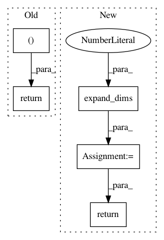

8b3543fca9d811c638bb72d78601c8564f5465fd,keras/backend/theano_backend.py,,batch_dot,#Any#Any#Any#,129
Before Change
def batch_dot(x, y, axes=None):
if axes is None:
// behaves like tf.batch_matmul as default
axes = [(x.ndim - 1,), (y.ndim - 2,)]
return T.batched_tensordot(x, y, axes=axes)
def transpose(x):
return T.transpose(x)
After Change
axes = [x.ndim - 1, y.ndim - 2]
out = T.batched_tensordot(x, y, axes=axes)
if ndim(out) == 1:
out = expand_dims(out, 1)
return out
def transpose(x):
return T.transpose(x)
In pattern: SUPERPATTERN
Frequency: 3
Non-data size: 5
Instances
Project Name: keras-team/keras
Commit Name: 8b3543fca9d811c638bb72d78601c8564f5465fd
Time: 2016-04-03
Author: EderSantana@users.noreply.github.com
File Name: keras/backend/theano_backend.py
Class Name:
Method Name: batch_dot
Project Name: keras-team/keras
Commit Name: 08014eea360fd8d66b7baab19cdb9335f52c167b
Time: 2016-08-24
Author: francois.chollet@gmail.com
File Name: keras/backend/tensorflow_backend.py
Class Name:
Method Name: repeat
Project Name: GPflow/GPflow
Commit Name: 5809cb0b339612434f4f332a91a2cd3e4570c34d
Time: 2018-02-26
Author: james@prowler.io
File Name: gpflow/transforms.py
Class Name: LowerTriangular
Method Name: backward_tensor